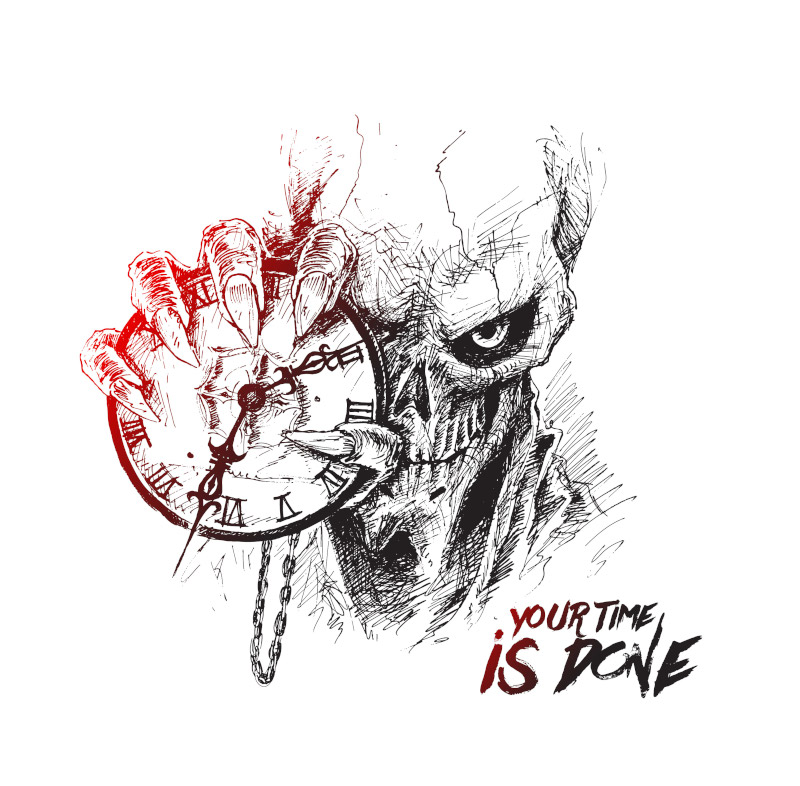

Lucas veio a falecer aos 82 anos, vítima de uma doença.
No fundo, seu amor pela arte nunca morreu, ele apenas foi enterrado cada vez mais fundo, porém, conforme o tempo passava, esse amor foi voltando, e trazendo consigo um enorme arrependimento, por não ter seguido a arte, não ter seguido seus sonhos.
Hoje, Lucas irá descansar, como sempre fará daqui pra frente.